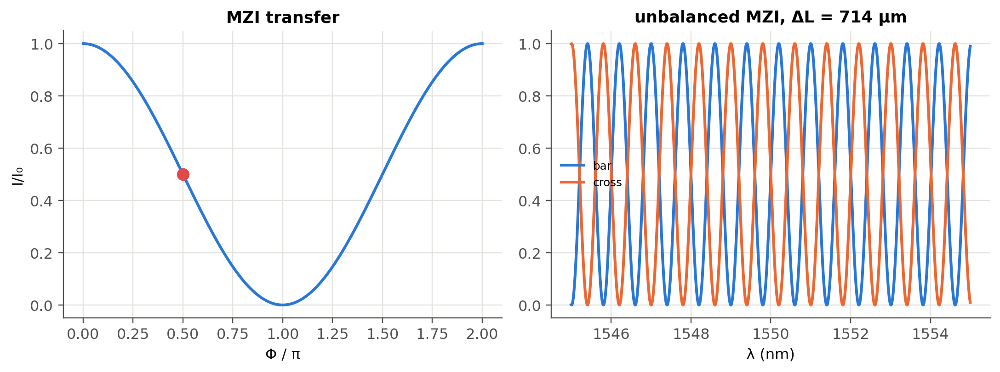
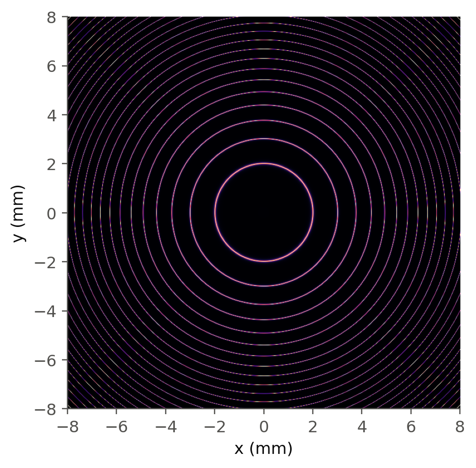

10 Interference and interferometers
 Run this chapter’s code in Google Colab (no installation).
Run this chapter’s code in Google Colab (no installation).
Slides 172–175 (two-beam interference) and 259–266 (Fabry–Perot interferometer at oblique incidence, Mach–Zehnder interferometer).
10.1 Key relations
Two coherent waves \(E_1=E_{01}\sin(\omega t-kr_1-\phi_1)\) and \(E_2=E_{02}\sin(\omega t-kr_2-\phi_2)\) add up to an intensity (slides 172–173)
\[ I=I_1+I_2+2\sqrt{I_1I_2}\cos\delta,\qquad \delta=k(r_2-r_1)+(\phi_2-\phi_1). \]
- Constructive interference: \(I_\text{max}=I_1+I_2+2\sqrt{I_1I_2}\), which is \(4I_1\) for equal beams.
- Destructive interference: \(I_\text{min}=I_1+I_2-2\sqrt{I_1I_2}\), which is \(0\) for equal beams.
- Incoherent waves simply add their intensities, \(I=I_1+I_2\) (slide 174).
- Fringe visibility \(V=(I_\text{max}-I_\text{min})/(I_\text{max}+I_\text{min})=2\sqrt{I_1I_2}/(I_1+I_2)\).
10.2 Mach–Zehnder interferometer, live (slides 264–266)
Light is split, travels two arms with a phase difference \(\Phi\), and is recombined. With equal splitting, the average output intensity is \(\propto\cos^2(\Phi/2)\) (slide 265). The response to a small phase change is steepest at quadrature, \(\Phi=90°\) (slide 266), which is where a modulator is biased.
10.3 Worked example: the Mach–Zehnder as modulator and as wavelength filter
Two uses in photonic integrated circuits:
- Modulator or switch: \(\Phi\) is set by a phase shifter (thermo-optic as in Chapter 1, or electro-optic, Chapter 6). The steepest slope is at quadrature.
- Wavelength filter or (de)multiplexer: an unbalanced MZI with arm-length difference \(\Delta L\) has \(\Phi=2\pi n_\text{eff}\Delta L/\lambda\), hence a free spectral range \(\mathrm{FSR}=\lambda^2/(N_g\Delta L)\).
Show the Python
Phi = np.linspace(0, 2*np.pi, 400)
fig, ax = plt.subplots(1, 2, figsize=(10, 3.8))
ax[0].plot(Phi/np.pi, np.cos(Phi/2)**2); ax[0].plot(0.5, 0.5, "o", color=ol.PALETTE[7], ms=8)
ax[0].set(xlabel="Φ / π", ylabel="I/I₀", title="MZI transfer")
Ng, n_eff, lam0 = 4.2, 2.45, nm(1550) # typical Si strip waveguide at 1550 nm (assumed values)
dL = c0/(Ng*100e9)
lam = np.linspace(nm(1545), nm(1555), 2000)
phi = 2*np.pi*(n_eff - (Ng - n_eff)*(lam - lam0)/lam0)*dL/lam # first-order dispersion of n_eff
ax[1].plot(lam*1e9, np.cos(phi/2)**2, label="bar"); ax[1].plot(lam*1e9, np.sin(phi/2)**2, label="cross")
ax[1].set(xlabel="λ (nm)", title=f"unbalanced MZI, ΔL = {dL*1e6:.0f} µm"); ax[1].legend(fontsize=8)
plt.tight_layout(); plt.show()
print(f"ΔL = {dL*1e6:.1f} µm gives FSR = 100 GHz = {lam0**2/(Ng*dL)*1e9:.2f} nm")
print(f"modulator at quadrature: dI/dΦ = I0/2 per radian (slide 266)")
ΔL = 713.8 µm gives FSR = 100 GHz = 0.80 nm
modulator at quadrature: dI/dΦ = I0/2 per radian (slide 266)10.4 Fabry–Perot interferometer at oblique incidence (slides 260–263)
For a plate (etalon) of index \(n\) and thickness \(L\), a ray at angle \(\theta\) inside the plate interferes constructively with its multiply-reflected copies when (slides 261–263)
\[ 2nL\cos\theta=m\lambda . \]
An extended source seen through an etalon therefore shows bright rings, one per order \(m\).
Show the Python
lam, L, R, f = nm(633), 5e-3, 0.9, 0.2
x = np.linspace(-8e-3, 8e-3, 700)
X, Y = np.meshgrid(x, x)
theta = np.arctan(np.hypot(X, Y)/f)
F = 4*R/(1 - R)**2
I = 1/(1 + F*np.sin(2*np.pi*L*np.cos(theta)/lam)**2)
fig, ax = plt.subplots(figsize=(4.6, 4.6))
ax.imshow(I, extent=[x[0]*1e3, x[-1]*1e3]*2, cmap="magma"); ax.grid(False)
ax.set(xlabel="x (mm)", ylabel="y (mm)"); plt.show()
m0 = 2*L/lam
print(f"order at the centre m = 2L/λ = {m0:.1f}; first bright ring (m = {np.floor(m0):.0f}) at θ = arccos(m/m0) = "
f"{np.degrees(np.arccos(np.floor(m0)/m0)):.3f}°")
order at the centre m = 2L/λ = 15797.8; first bright ring (m = 15797) at θ = arccos(m/m0) = 0.572°
TipGoing deeper
- Why does the FSR of an unbalanced MZI depend on \(N_g\) and not on \(n_\text{eff}\)? Derive it from \(\Phi(\lambda)\) with \(n_\text{eff}(\lambda)\).
- Cascading unbalanced MZIs (lattice filters) and the arrayed-waveguide grating (AWG), a “many-arm” interferometer that behaves like a diffraction grating (Chapter 13).
- Extinction ratio limited by non-ideal couplers: derive the extinction ratio as a function of the splitting ratio, and compare with the live panel.
- Interferometric sensors: the fiber gyroscope (Sagnac), gravitational-wave detectors (Michelson with Fabry–Perot arms). Estimate the phase sensitivity limited by shot noise.
NoteComplements
- P. Hariharan, Basics of Interferometry: compact and practical.
- L. Chrostowski, M. Hochberg, Silicon Photonics Design, Cambridge: MZI, ring and AWG design in silicon photonics.
10.5 Try it yourself
- Two beams with \(I_2=I_1/10\) interfere. What is the fringe visibility? Is it worth equalising them in an experiment?
- A thermo-optic MZI switch needs \(\Phi=\pi\). Using the numbers of Chapter 1, how much heater power is roughly needed if the heater raises the waveguide temperature by 10 K per mW?
- Tilt the etalon of the ring figure by 1°. What happens to the rings?